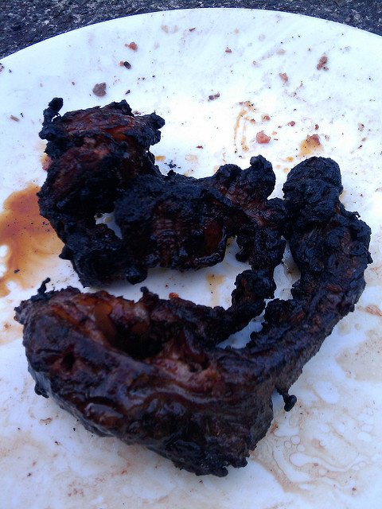

Steak

What is steak?
Steak is meat!
How to cook steak:
- Pre heat cooking surface to medium/high temperature (grill preferred)
- Place steak onto cooking surface
- While steak is cooking season to preference with salt and pepper
- Cook for 7 minutes per side to achieve medium-rare for a one pound steak
- Serve with sides
all done! Your steak should look similarly to the one pictured above, if cooked correctly.